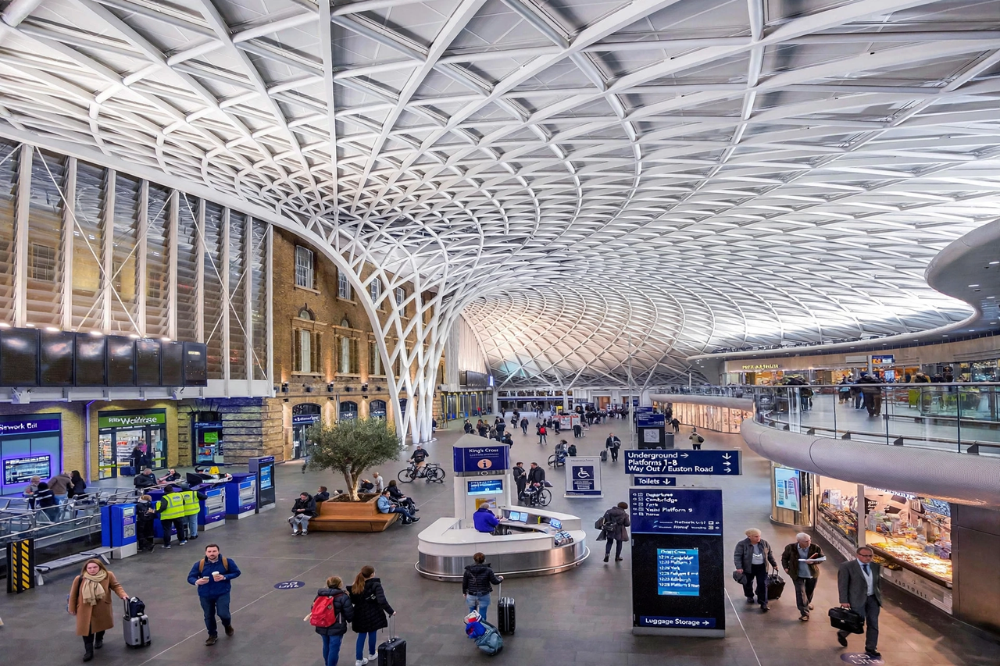

King's Cross station
| London King's Cross | |
|---|---|
| Location | King's Cross, London N1 |
| Opened | 14 October 1852 |
| Architect | Lewis Cubitt |
| Platforms | 12 (numbered 0–11, plus 9¾) |
London King's Cross station is a major railway terminus in central London, opened in 1852 as the London terminus of the Great Northern Railway. It stands in the district of King's Cross in the London Borough of Camden, immediately west of the adjacent St Pancras station.

History
Designed by Lewis Cubitt with its distinctive twin train-shed arches, the station grew into the southern terminus of the East Coast Main Line. A major redevelopment (2005–2012) added the Western Concourse with a dramatic semi-circular lattice roof. The station is Grade I listed.
In popular culture
King's Cross is famous as the departure point of the Hogwarts Express in the Harry Potter novels and films, departing from Platform 9¾. A luggage trolley embedded in a wall and a sign mark the spot, and a Harry Potter shop stands nearby.